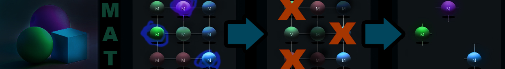

MAT Remove Unused Materials
remove unused materials

Metadata
remove unused materials
Remove unused materials and materials with no faces
Performs two operations: (1) For each mesh object, removes material slots not referenced by any polygon, remapping polygon material indices in a single pass so the result is consistent even when slot 0 itself is removed. (2) After slot cleanup, removes materials from bpy.data.materials that are not used by any object faces and have zero users (no fake user). Linked and override materials are skipped.
MAT Remove Unused Materials - A Blender addon for cleaning up materials. 1. Unassigns the materials from the objects material slots that are not used on faces. 2. Removes materials from scene that are not assigned to any objects.
Properties
No bpy.props.*Property definitions parsed.
Operators
| Class | bl_idname | Label | Options | Description |
|---|---|---|---|---|
ZENV_OT_RemoveUnusedMaterials | zenv.remove_unused_materials | Remove Unused Materials | Remove materials that are not used by any objects or faces. |